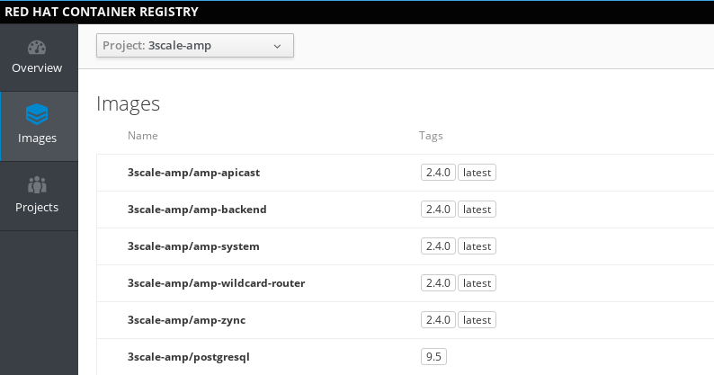
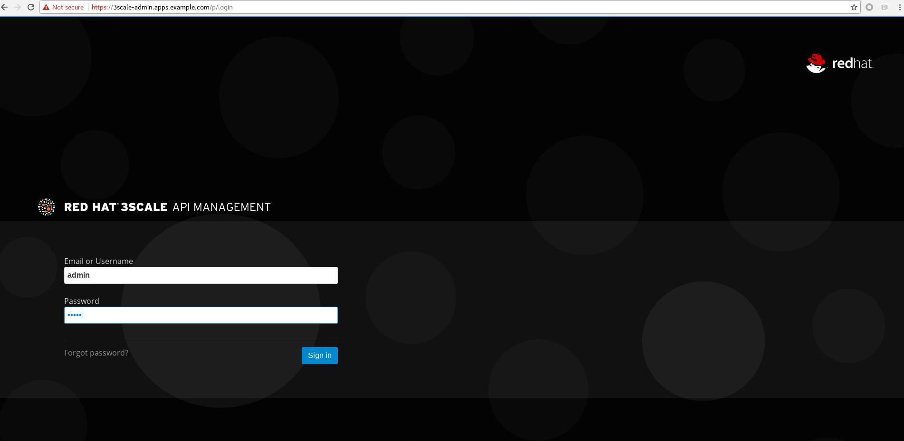

# subscription-manager list --available --matches '*3scale*'
# subscription-manager attach --pool=<PoolID>
# subscription-manager repos --enable=rhel-7-server-3scale-amp-2.4-rpms3Scale
安装
模版下载
1. Enale rhel-7-server-3scale-amp-2.4-rpms
2. 获取模版
# yum install 3scale-amp-template3. 列出所有模版
# rpm -q -l 3scale-amp-template
/opt/amp/templates
/opt/amp/templates/amp-eval-tech-preview.yml
/opt/amp/templates/amp-ha-tech-preview.yml
/opt/amp/templates/amp-s3.yml
/opt/amp/templates/amp.yml安装准备
1. 确保 OpenShift 安装并正常运行.
2. 下载
-
(Option 1) 参照 模版下载
-
(Option 2) 下载 3Scale 2.4 - https://github.com/3scale/3scale-amp-openshift-templates/tree/2.4.0.GA/amp
wget https://raw.githubusercontent.com/3scale/3scale-amp-openshift-templates/2.4.0.GA/amp/amp.yml3. 创建 4 个 PV
| 类型 | 描述 |
|---|---|
RWO |
redis backend, 1Gi |
RWO |
redis system, 1Gi |
RWO |
mysql, 1Gi |
RWX |
system, 100Mi |
NFS 服务器创建 exporter:
mkdir -p /srv/nfs/3scale/pv{1..4}
for pvnum in {1..4} ; do
echo "/srv/nfs/3scale/pv${pvnum} *(rw,root_squash)" >> /etc/exports.d/openshift-3scale.exports
chown -R nfsnobody.nfsnobody /srv/nfs/3scale/pv${pvnum}
chmod -R 777 /srv/nfs
done
systemctl restart nfs-server创建 3scale-24-mysql PV 的 yaml 文件：
{
"apiVersion": "v1",
"kind": "PersistentVolume",
"metadata": {
"name": "pv1"
},
"spec": {
"capacity": {
"storage": "1Gi"
},
"accessModes": [ "ReadWriteOnce" ],
"nfs": {
"path": "/srv/nfs/3scale/pv1",
"server": "nfs.example.com"
},
"persistentVolumeReclaimPolicy": "Recycle"
}
}创建 3scale-24-redis-backend PV 的 yaml 文件:
{
"apiVersion": "v1",
"kind": "PersistentVolume",
"metadata": {
"name": "pv2"
},
"spec": {
"capacity": {
"storage": "1Gi"
},
"accessModes": [ "ReadWriteOnce" ],
"nfs": {
"path": "/srv/nfs/3scale/pv2",
"server": "nfs.example.com"
},
"persistentVolumeReclaimPolicy": "Recycle"
}
}创建 3scale-24-redis-system PV 的 yaml 文件:
{
"apiVersion": "v1",
"kind": "PersistentVolume",
"metadata": {
"name": "pv3"
},
"spec": {
"capacity": {
"storage": "1Gi"
},
"accessModes": [ "ReadWriteOnce" ],
"nfs": {
"path": "/srv/nfs/3scale/pv3",
"server": "nfs.example.com"
},
"persistentVolumeReclaimPolicy": "Recycle"
}
}创建 3scale-24-system PV 的 yaml 文件:
{
"apiVersion": "v1",
"kind": "PersistentVolume",
"metadata": {
"name": "pv4"
},
"spec": {
"capacity": {
"storage": "100Mi"
},
"accessModes": [ "ReadWriteMany" ],
"nfs": {
"path": "/srv/nfs/3scale/pv4",
"server": "nfs.example.com"
},
"persistentVolumeReclaimPolicy": "Retain"
}
}查克创建的相关 PV
# oc get pv | grep pv-3scale-24
pv-3scale-24-mysql 1Gi RWO Recycle Available 15s
pv-3scale-24-redis-backend 1Gi RWO Recycle Available 15s
pv-3scale-24-redis-system 1Gi RWO Recycle Available 15s
pv-3scale-24-system 100Mi RWX Retain Available 15s4. 下载 3Scale 2.4 所需的容器镜像
registry.access.redhat.com/3scale-amp24/backend
registry.access.redhat.com/3scale-amp24/zync
registry.access.redhat.com/3scale-amp24/apicast-gateway
registry.access.redhat.com/3scale-amp22/wildcard-router
registry.access.redhat.com/3scale-amp24/system
registry.access.redhat.com/rhscl/postgresql-95-rhel7:9.5
registry.access.redhat.com/rhscl/mysql-57-rhel7:5.7
registry.access.redhat.com/3scale-amp20/memcached
registry.access.redhat.com/rhscl/redis-32-rhel7:3.2安装
1 - 创建一个工程
oc new-project 3scale-amp --display-name="3scale APM 2.4" --description="3scale AMP 2.4"2 - 根据模版创建容器部署对象
# oc new-app -f amp.yml --param ADMIN_PASSWORD=redhat --param MASTER_PASSWORD=redhat --param WILDCARD_DOMAIN=apps.example.com --param WILDCARD_POLICY=Subdomain
--> Deploying template "3scale-amp/3scale-api-management" for "amp.yml" to project 3scale-amp
3scale API Management
---------
3scale API Management main system
Login on https://3scale-admin.apps.example.com as admin/redhat
* With parameters:
* AMP_RELEASE=2.4.0
* APP_LABEL=3scale-api-management
* TENANT_NAME=3scale
* RWX_STORAGE_CLASS=null
* AMP_BACKEND_IMAGE=registry.example.com/3scale-amp24/backend
* AMP_ZYNC_IMAGE=registry.example.com/3scale-amp24/zync
* AMP_APICAST_IMAGE=registry.example.com/3scale-amp24/apicast-gateway
* AMP_ROUTER_IMAGE=registry.example.com/3scale-amp22/wildcard-router
* AMP_SYSTEM_IMAGE=registry.example.com/3scale-amp24/system
* POSTGRESQL_IMAGE=registry.example.com/rhscl/postgresql-95-rhel7:9.5
* MYSQL_IMAGE=registry.example.com/rhscl/mysql-57-rhel7:5.7
* MEMCACHED_IMAGE=registry.example.com/3scale-amp20/memcached
* IMAGESTREAM_TAG_IMPORT_INSECURE=false
* REDIS_IMAGE=registry.example.com/rhscl/redis-32-rhel7:3.2
* MySQL User=mysql
* MySQL Password=ld6lc7js # generated
* MySQL Database Name=system
* MySQL Root password.=qv0wq2pg # generated
* SYSTEM_BACKEND_USERNAME=3scale_api_user
* SYSTEM_BACKEND_PASSWORD=kxrcwfhd # generated
* SYSTEM_BACKEND_SHARED_SECRET=sgn2xnkb # generated
* SYSTEM_APP_SECRET_KEY_BASE=3a41d8786540debe258d4585ec861215c02d181cbb31424864032ae2a1a57867a7381c820eabac878c86a385082136013626edd0276c7c248136653405744c04 # generated
* ADMIN_PASSWORD=redhat
* ADMIN_USERNAME=admin
* ADMIN_ACCESS_TOKEN=7ggqj3ipnl1v4srr # generated
* MASTER_NAME=master
* MASTER_USER=master
* MASTER_PASSWORD=redhat
* MASTER_ACCESS_TOKEN=1s2gnhr0 # generated
* RECAPTCHA_PUBLIC_KEY=
* RECAPTCHA_PRIVATE_KEY=
* PostgreSQL Connection Password=r3xGXkO24MghV6kf # generated
* ZYNC_SECRET_KEY_BASE=44bOFigQAFG1RXkK # generated
* ZYNC_AUTHENTICATION_TOKEN=vp1HtV133TJ3fcjl # generated
* APICAST_ACCESS_TOKEN=d83s08n5 # generated
* APICAST_MANAGEMENT_API=status
* APICAST_OPENSSL_VERIFY=false
* APICAST_RESPONSE_CODES=true
* APICAST_REGISTRY_URL=http://apicast-staging:8090/policies
* WILDCARD_DOMAIN=apps.example.com
* WILDCARD_POLICY=Subdomain
--> Creating resources ...
imagestream.image.openshift.io "amp-backend" created
imagestream.image.openshift.io "amp-zync" created
imagestream.image.openshift.io "amp-apicast" created
imagestream.image.openshift.io "amp-wildcard-router" created
imagestream.image.openshift.io "amp-system" created
imagestream.image.openshift.io "postgresql" created
deploymentconfig.apps.openshift.io "backend-redis" created
service "backend-redis" created
configmap "redis-config" created
persistentvolumeclaim "backend-redis-storage" created
deploymentconfig.apps.openshift.io "system-redis" created
persistentvolumeclaim "system-redis-storage" created
deploymentconfig.apps.openshift.io "backend-cron" created
deploymentconfig.apps.openshift.io "backend-listener" created
service "backend-listener" created
route.route.openshift.io "backend" created
deploymentconfig.apps.openshift.io "backend-worker" created
configmap "backend-environment" created
secret "backend-internal-api" created
secret "backend-redis" created
secret "backend-listener" created
deploymentconfig.apps.openshift.io "system-mysql" created
configmap "mysql-main-conf" created
configmap "mysql-extra-conf" created
persistentvolumeclaim "mysql-storage" created
deploymentconfig.apps.openshift.io "system-memcache" created
persistentvolumeclaim "system-storage" created
service "system-provider" created
service "system-master" created
service "system-developer" created
route.route.openshift.io "system-provider-admin" created
route.route.openshift.io "system-master" created
route.route.openshift.io "system-developer" created
service "system-mysql" created
service "system-redis" created
service "system-sphinx" created
service "system-memcache" created
configmap "system" created
configmap "smtp" created
configmap "system-environment" created
deploymentconfig.apps.openshift.io "system-app" created
deploymentconfig.apps.openshift.io "system-sidekiq" created
deploymentconfig.apps.openshift.io "system-sphinx" created
secret "system-events-hook" created
secret "system-redis" created
secret "system-master-apicast" created
secret "system-database" created
secret "system-seed" created
secret "system-recaptcha" created
secret "system-app" created
secret "system-memcache" created
deploymentconfig.apps.openshift.io "zync" created
deploymentconfig.apps.openshift.io "zync-database" created
service "zync" created
service "zync-database" created
secret "zync" created
deploymentconfig.apps.openshift.io "apicast-staging" created
deploymentconfig.apps.openshift.io "apicast-production" created
service "apicast-staging" created
service "apicast-production" created
route.route.openshift.io "api-apicast-staging" created
route.route.openshift.io "api-apicast-production" created
configmap "apicast-environment" created
secret "apicast-redis" created
deploymentconfig.apps.openshift.io "apicast-wildcard-router" created
service "apicast-wildcard-router" created
route.route.openshift.io "apicast-wildcard-router" created
--> Success
Access your application via route 'backend-3scale.apps.example.com'
Access your application via route '3scale-admin.apps.example.com'
Access your application via route 'master.apps.example.com'
Access your application via route '3scale.apps.example.com'
Access your application via route 'api-3scale-apicast-staging.apps.example.com'
Access your application via route 'api-3scale-apicast-production.apps.example.com'
Access your application via route 'apicast-wildcard.apps.example.com'
Run 'oc status' to view your app.安装验证
1. 查看运行的容器
# oc get pods
NAME READY STATUS RESTARTS AGE
apicast-production-1-g2lfd 1/1 Running 0 32m
apicast-staging-1-qs9wc 1/1 Running 0 32m
apicast-wildcard-router-1-4q8jl 1/1 Running 0 32m
backend-cron-1-wdqp9 1/1 Running 0 32m
backend-listener-1-j85fg 1/1 Running 0 32m
backend-redis-1-bq7j8 1/1 Running 0 32m
backend-worker-1-l99nc 1/1 Running 0 32m
system-app-1-5vj47 3/3 Running 0 23m
system-memcache-1-kxllm 1/1 Running 0 32m
system-mysql-1-zqlzs 1/1 Running 0 32m
system-redis-1-7crfx 1/1 Running 0 32m
system-sidekiq-1-bwkjf 1/1 Running 0 32m
system-sphinx-1-fxs8k 1/1 Running 0 32m
zync-1-6cqt2 1/1 Running 0 32m
zync-database-1-sbgcq 1/1 Running 0 32m2. 查看容器的镜像
使用 https://registry-console-default.apps.example.com/registry 可以查看内部镜像仓库。

3 - 查看创建的 PVC
# oc get pvc
NAME STATUS VOLUME CAPACITY ACCESS MODES STORAGECLASS AGE
backend-redis-storage Bound pv-3scale-24-redis-system 1Gi RWO 44m
mysql-storage Bound pv-3scale-24-redis-backend 1Gi RWO 44m
system-redis-storage Bound pv-3scale-24-mysql 1Gi RWO 44m
system-storage Bound pv-3scale-24-system 100Mi RWX 44m4 - 查看 Mysql 数据库
$ oc rsh $(oc get pod | grep mysql | awk '{print $1}')
$ mysql -uroot system
mysql> show tables;5 - 登录 3Scale 管理界面，执行如下命令获取登录 URL
$ cat /tmp/3scale_amp_provision_details.txt | grep Login
Login on https://3scale-admin.apps.example.com as admin/admin登录 https://3scale-admin.apps.example.com 进入到 3Scale 登录界面:

使用 admin/admin 即可登录 3Scale API 管理控制台。